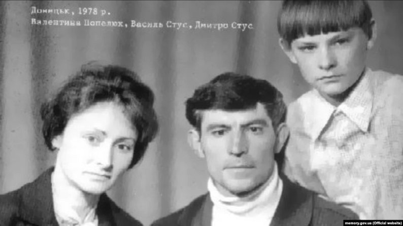
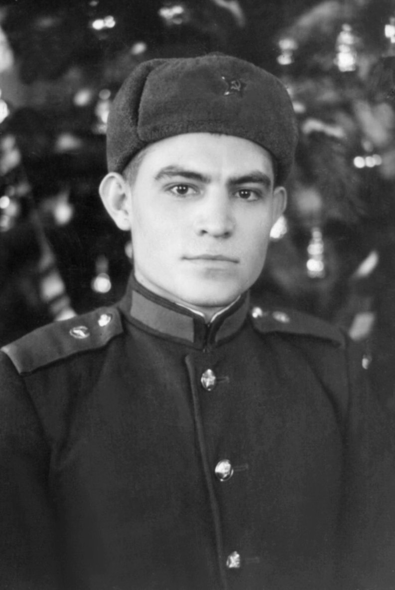
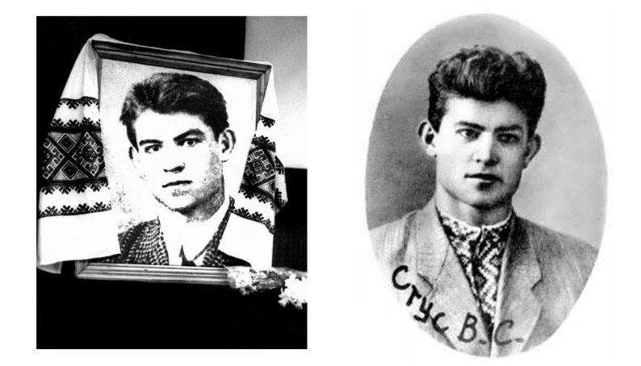
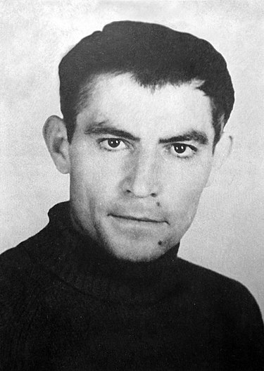

.jpg)



Закінчивши 1959 року навчання з дипломом із відзнакою, три місяці працював учителем української мови й літератури в селі Таужне Кіровоградської області, після чого два роки проходив службу в армії на Уралі. Під час навчання і служби почав писати вірші. Тоді ж відкрив для себе німецьких поетів Гете і Рільке, переклав близько сотні їхніх творів. Ці переклади було згодом конфісковано і втрачено. У 1959 році в «Літературній Україні» опублікував свої перші вірші з напутнім словом Андрія Малишка
У 1961—1963 роках викладав українську мову та літературу в середній школі № 23 м. Горлівки. Згодом працював підземним плитовим на шахті «Октябрьська» в Донецьку[5].
З березня по жовтень 1963 року — літературний редактор газети «Соціалістичний Донбас». Зокрема, працював в україномовній частині редакції цієї газети (з квітня 1963 року до квітень 1965 року в світ вийшло 509 номерів українського «Соціалістичного Донбасу» накладом по кілька десятків тисяч примірників[6]). Власне Василь Стус був зарахований на посаду першого літературного редактора газети, в підпорядкуванні якого було чотири перекладачі та дві друкарки. Працював сім місяців, доки не вступив в аспірантуру і не поїхав до Києва на навчання[6].
Вступив до аспірантури Інституту літератури ім. Т. Шевченка Академії наук УРСР у Києві зі спеціальності «Теорія літератури». Тема дисертації — «Джерела емоційності художнього твору (на матеріалі художньої прози)»[7]. За час перебування в аспірантурі підготував і здав до видавництва першу збірку творів «Круговерть», написав низку літературно-критичних статей, надрукував кілька перекладів віршів Гете, Рільке, Лорки. Належав до Клубу творчої молоді, який очолював Лесь Танюк.
4 вересня 1965 року, під час прем'єри фільму Сергія Параджанова «Тіні забутих предків», у кінотеатрі «Україна» в Києві, взяв участь в акції протесту. Стус разом з Іваном Дзюбою, В'ячеславом Чорноволом, Юрієм Бадзьом закликав партійних керівників і населення столиці засудити арешти української інтелігенції, що стало першим громадським політичним протестом на масові політичні репресії в Радянському Союзі у післявоєнний час.
Після цієї акції вже 7 вересня Стуса викликали до кабінету заступника директора Інституту літератури Сергія Зубкова. За свідченнями очевидців, розмова закінчувалася криком. Коли Василь Стус вийшов із кабінету, від нервової напруги в нього тремтіло все тіло, а обличчя Зубкова розчервонілося й перекосилося від ненависті. За кілька годин Стус передав дирекції свою пояснювальну записку.[8] Надалі Зубков домігся відрахування Стуса з аспірантури[9].
Роки тимчасових робіт (1965—1972) стали найщасливішими роками його життя. Хоча з моменту виступу в кінотеатрі за ним і стежили агенти КДБ, він часто їздив із друзями в подорожі, у ці роки він знайшов свою кохану.
Заробляв на життя, працюючи у Центральному державному історичному архіві (ця робота набула для нього великого значення), згодом — на шахті, залізниці, будівництві, в котельні, у метро. Протягом 1966—1972 років — старший інженер у конструкторському бюро Міністерства промисловості будматеріалів УРСР.
У 1965 році одружився з Валентиною Василівною Попелюх. 15 листопада 1966 року в них народився син Дмитро, нині літературознавець, дослідник творчості батька.
Пропозицію Стуса опублікувати у 1965 році свою першу збірку віршів «Круговерть» відхилило видавництво. Незважаючи на позитивні відгуки рецензентів, було відхилено і його другу збірку — «Зимові дерева». Однак її опублікували в самвидаві. У 1970 році книжка віршів поета «Зимові дерева» потрапила до Бельгії і була начебто (як це вказано у книзі) видана в Брюсселі (насправді — у Лондоні, у видавництві бандерівської ОУН).
У відкритих листах до Спілки письменників, Центрального комітету Компартії, Верховної Ради Стус критикував керівну систему, яка після відлиги стала повертатися до тоталітаризму, відновлення культу особи та порушення прав людини, протестував проти арештів у середовищі своїх колег. На початку 1970-х років приєднався до групи захисту прав людини. Літературна діяльність поета, його звернення у вищі партійні інстанції з протестами проти порушення людських прав і критичними оцінками тогочасного режиму спричинили його арешт у січні 1972 року.